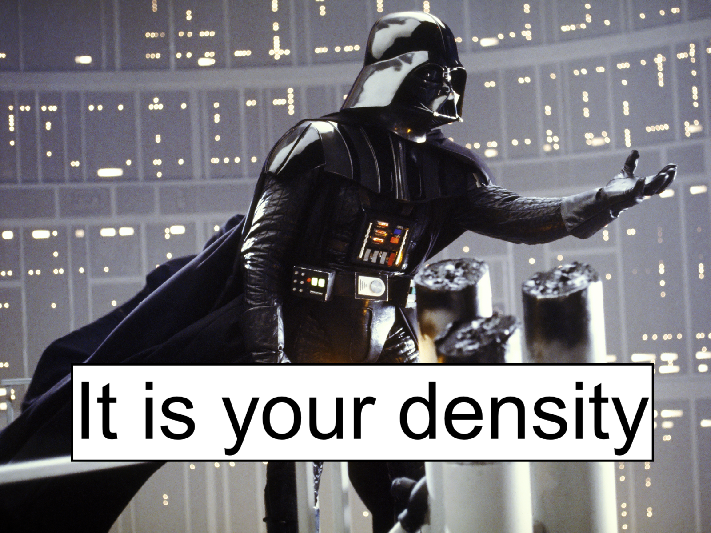

Density Surface Modeling: A Case Study for Central Pacific False Killer Whales (Pseudorca crassidens)
Devin Johnson, Erin Oleson, Janelle Badger, Amanda Bradford, Jennifer McCullough
Pacific Islands Fisheries Science Center, NOAA Fisheries, Honolulu, Hawaiʻi
Yvonne Barkley
Cooperative Institute for Marine & Atmospheric Research, University of Hawaiʻi at Mānoa, Honolulu, Hawaiʻi
Elizabeth Becker
Cascadia Research Collective LLC, Olympia, Washington
Megan Wood
Saltwater, Inc, Anchorage, Alaska

Summary
Spatially-explicit density surface models (DSMs) for cetaceans have become a powerful assessment and management tool enabling examination of animal distribution and density at various scales within the modeled area. The objective of the PIFSC Cetacean Research Program’s NPS Toolbox Initiative project is to update the central Pacific and Hawaiʻi DSM framework and produce a new density model for pelagic false killer whales, and other species, using data from the 2023 Hawaiian Islands Cetacean and Ecosystem Assessment Survey (HICEAS) survey. The project is using open science practices to accomplish three main objectives: (1) reformulation of the current central Pacific/Hawaiʻi DSM structure in R using upgraded spatial functionality and new modeled oceanographic products, (2) integration of new spatially-explicit methods for propagating uncertainty of detection parameters and environmental variability into stock assessments, and (3) exploration and integration of new model validation approaches, especially for data limited species. While the objectives of the CRP Toolbox project are to provide stock assessments for pelagic false killer whales in the central Pacific region, the overall goal is to provide a current, open access workflow for density surface modeling of distance sampling-based survey data that any region in NMFS can use for reproducible cetacean stock assessments. We will provide a discussion of the workflow, products, and current status of the project.
R code
R script files to execute the DSM analysis presented here can be found here in the the Github repository for the webpage.
License
As a work by US federal employees as part of their official duties, this project is in the public domain within the United States of America. Additionally, we waive copyright and related rights in the work worldwide through the CC0 1.0 Universal public domain dedication.
NOAA Disclaimer
This repository is a scientific product and is not official communication of the National Oceanic and Atmospheric Administration, or the United States Department of Commerce. All NOAA GitHub project code is provided on an ‘as is’ basis and the user assumes responsibility for its use. Any claims against the Department of Commerce or Department of Commerce bureaus stemming from the use of this GitHub project will be governed by all applicable Federal law. Any reference to specific commercial products, processes, or services by service mark, trademark, manufacturer, or otherwise, does not constitute or imply their endorsement, recommendation or favoring by the Department of Commerce. The Department of Commerce seal and logo, or the seal and logo of a DOC bureau, shall not be used in any manner to imply endorsement of any commercial product or activity by DOC or the United States Government.
